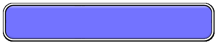

LINK ONE
LINK TWO
LINK THREE
LINK FOUR
Here is where you would place your text content. Type something in here and remove this sample text.
List Item Here
List Item Here
List Item Here
Web Design Template By
Modomedia, Inc.
©1998